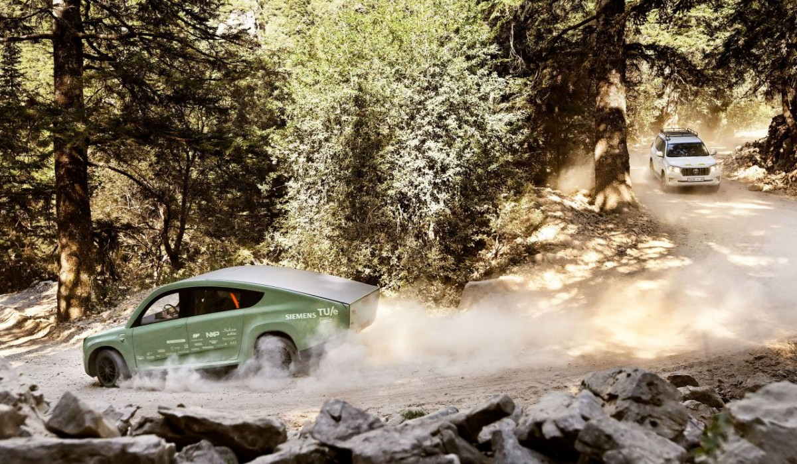

Stella Terra est une voiture solaire tout terrain conçue par un groupe d'étudiant de l'Université technologie d'Eindhoven au Pays Bas.
La Stella Terra est un véhicule écologique car elle utilise l'énergie solaire. Elle a permet d'envisager
des nouveaux modèles d'énergie à utiliser pour faire fonctionner une voiture.
Le véhicule a une forte autonomie, par temps ensoleillé le véhicule peut allé jusqu'à 145km/h
et pouvant aller jusu'à 630 km.
La Stella Terra est considérer comme un véhicule leger car elle
pèse 1200kg.
Le véhicule a une autonomie faible sur les terrains accidentés.
La Stella Terra est un véhicule écologique. Cette innovation permet d'envisager des nouveaux modèles d'énergie à utiliser pour faire fonctionner une voiture
L'inconvéniant est que le véhicule a une autonomie faible sur les terrains accidentés.